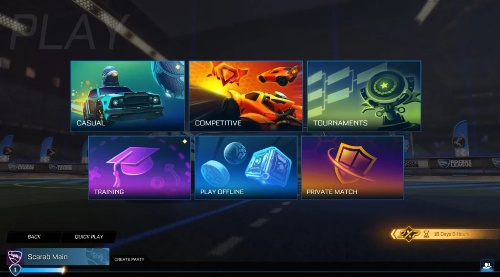

Les différents modes de jeu
Rocket League propose plusieurs modes de jeu permettant aux joueurs de s’affronter de différentes manières. Les modes classiques se jouent en équipes et mettent en avant la coopération et la stratégie.
Il existe également des modes alternatifs qui modifient les règles traditionnelles du jeu afin de proposer une expérience plus fun et moins compétitive.
- 1v1 : un mode très technique basé sur le duel
- 2v2 : le mode le plus équilibré
- 3v3 : le mode officiel en esport
- Rumble : un mode fun avec des pouvoirs spéciaux